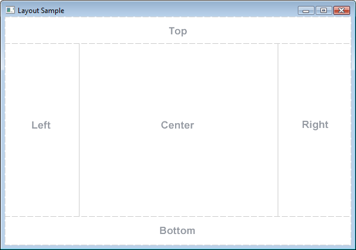

public class BorderPane extends Pane

The top and bottom children will be resized to their preferred heights and extend the width of the borderpane. The left and right children will be resized to their preferred widths and extend the length between the top and bottom nodes. And the center node will be resized to fill the available space in the middle. Any of the positions may be null. Example: BorderPane borderpane = new BorderPane();
ToolBar toolbar = new ToolBar();
HBox statusbar = new HBox();
Node appContent = new AppContentNode();
borderPane.setTop(toolbar);
borderPane.setCenter(appContent);
borderPane.setBottom(statusbar);
Borderpanes may be styled with backgrounds and borders using CSS. See
Region superclass for details.
BorderPane honors the minimum, preferred, and maximum sizes of its children. If the child's resizable range prevents it from be resized to fit within its position, it will be aligned relative to the space using a default alignment as follows:
BorderPane lays out each child set in the five positions regardless of the child's visible property value; unmanaged children are ignored.
Scene,
in which case its size will track the size of the scene. If the scene or stage
size has not been directly set by the application, the scene size will be
initialized to the borderpane's preferred size. However, if a borderpane
has a parent other than the scene, that parent will resize the borderpane within
the borderpane's resizable range during layout. By default the borderpane
computes this range based on its content as outlined in the table below.
| width | height | |
|---|---|---|
| minimum | left/right insets plus width required to display right/left children at their pref widths and top/bottom/center with at least their min widths | top/bottom insets plus height required to display top/bottom children at their pref heights and left/right/center with at least their min heights |
| preferred | left/right insets plus width required to display display top/right/bottom/left/center children with at least their pref widths | top/bottom insets plus height required to display display top/right/bottom/left/center children with at least their pref heights |
| maximum | Double.MAX_VALUE | Double.MAX_VALUE |
A borderpane's unbounded maximum width and height are an indication to the parent that it may be resized beyond its preferred size to fill whatever space is assigned to it.
BorderPane provides properties for setting the size range directly. These properties default to the sentinel value Region.USE_COMPUTED_SIZE, however the application may set them to other values as needed:
borderpane.setPrefSize(500,400);
BorderPane does not clip its content by default, so it is possible that childrens' bounds may extend outside its own bounds if a child's min size prevents it from being fit within it space.
| Constraint | Type | Description |
|---|---|---|
| alignment | javafx.geometry.Pos | The alignment of the child within its area of the borderpane. |
| margin | javafx.geometry.Insets | Margin space around the outside of the child. |
Example:
ListView list = new ListView();
BorderPane.setAlignment(list, Pos.TOP_LEFT);
BorderPane.setMargin(list, new Insets(12,12,12,12));
borderpane.setCenter(list);
| Type | Property and Description |
|---|---|
ObjectProperty<Node> |
bottom
The node placed on the bottom edge of this border pane.
|
ObjectProperty<Node> |
center
The node placed in the center of this border pane.
|
ObjectProperty<Node> |
left
The node placed on the left edge of this border pane.
|
ObjectProperty<Node> |
right
The node placed on the right edge of this border pane.
|
ObjectProperty<Node> |
top
The node placed on the top edge of this border pane.
|
height, maxHeight, maxWidth, minHeight, minWidth, padding, prefHeight, prefWidth, snapToPixel, widthneedsLayoutblendMode, boundsInLocal, boundsInParent, cacheHint, cache, clip, cursor, depthTest, disabled, disable, effect, eventDispatcher, focused, focusTraversable, hover, id, inputMethodRequests, layoutBounds, layoutX, layoutY, localToParentTransform, localToSceneTransform, managed, mouseTransparent, onContextMenuRequested, onDragDetected, onDragDone, onDragDropped, onDragEntered, onDragExited, onDragOver, onInputMethodTextChanged, onKeyPressed, onKeyReleased, onKeyTyped, onMouseClicked, onMouseDragEntered, onMouseDragExited, onMouseDragged, onMouseDragOver, onMouseDragReleased, onMouseEntered, onMouseExited, onMouseMoved, onMousePressed, onMouseReleased, onRotate, onRotationFinished, onRotationStarted, onScrollFinished, onScroll, onScrollStarted, onSwipeDown, onSwipeLeft, onSwipeRight, onSwipeUp, onTouchMoved, onTouchPressed, onTouchReleased, onTouchStationary, onZoomFinished, onZoom, onZoomStarted, opacity, parent, pickOnBounds, pressed, rotate, rotationAxis, scaleX, scaleY, scaleZ, scene, style, translateX, translateY, translateZ, visibleUSE_COMPUTED_SIZE, USE_PREF_SIZE| Constructor and Description |
|---|
BorderPane()
Creates a BorderPane layout.
|
| Modifier and Type | Method and Description |
|---|---|
ObjectProperty<Node> |
bottomProperty()
The node placed on the bottom edge of this border pane.
|
ObjectProperty<Node> |
centerProperty()
The node placed in the center of this border pane.
|
static void |
clearConstraints(Node child)
Removes all borderpane constraints from the child node.
|
protected double |
computeMinHeight(double width)
Computes the minimum height of this region.
|
protected double |
computeMinWidth(double height)
Computes the minimum width of this region.
|
protected double |
computePrefHeight(double width)
Computes the preferred height of this region for the given width;
Region subclasses should override this method to return an appropriate
value based on their content and layout strategy.
|
protected double |
computePrefWidth(double height)
Computes the preferred width of this region for the given height.
|
static Pos |
getAlignment(Node child)
Returns the child's alignment constraint if set.
|
Node |
getBottom()
Gets the value of the property bottom.
|
Node |
getCenter()
Gets the value of the property center.
|
Orientation |
getContentBias()
Returns the orientation of a node's resizing bias for layout purposes.
|
Node |
getLeft()
Gets the value of the property left.
|
static Insets |
getMargin(Node child)
Returns the child's margin constraint if set.
|
Node |
getRight()
Gets the value of the property right.
|
Node |
getTop()
Gets the value of the property top.
|
protected void |
layoutChildren()
Invoked during the layout pass to layout the children in this
Parent. |
ObjectProperty<Node> |
leftProperty()
The node placed on the left edge of this border pane.
|
ObjectProperty<Node> |
rightProperty()
The node placed on the right edge of this border pane.
|
static void |
setAlignment(Node child,
Pos value)
Sets the alignment for the child when contained by a borderpane.
|
void |
setBottom(Node value)
Sets the value of the property bottom.
|
void |
setCenter(Node value)
Sets the value of the property center.
|
void |
setLeft(Node value)
Sets the value of the property left.
|
static void |
setMargin(Node child,
Insets value)
Sets the margin for the child when contained by a borderpane.
|
void |
setRight(Node value)
Sets the value of the property right.
|
void |
setTop(Node value)
Sets the value of the property top.
|
ObjectProperty<Node> |
topProperty()
The node placed on the top edge of this border pane.
|
getChildrencomputeMaxHeight, computeMaxWidth, getHeight, getInsets, getMaxHeight, getMaxWidth, getMinHeight, getMinWidth, getPadding, getPrefHeight, getPrefWidth, getWidth, heightProperty, isResizable, isSnapToPixel, layoutInArea, layoutInArea, layoutInArea, maxHeight, maxHeightProperty, maxWidth, maxWidthProperty, minHeight, minHeightProperty, minWidth, minWidthProperty, paddingProperty, positionInArea, positionInArea, prefHeight, prefHeightProperty, prefWidth, prefWidthProperty, resize, setHeight, setMaxHeight, setMaxSize, setMaxWidth, setMinHeight, setMinSize, setMinWidth, setPadding, setPrefHeight, setPrefSize, setPrefWidth, setSnapToPixel, setWidth, snapPosition, snapSize, snapSpace, snapToPixelProperty, widthPropertygetBaselineOffset, getChildrenUnmodifiable, getManagedChildren, getStylesheets, isNeedsLayout, layout, lookup, needsLayoutProperty, requestLayout, setNeedsLayoutaddEventFilter, addEventHandler, autosize, blendModeProperty, boundsInLocalProperty, boundsInParentProperty, buildEventDispatchChain, cacheHintProperty, cacheProperty, clipProperty, contains, contains, cursorProperty, depthTestProperty, disabledProperty, disableProperty, effectProperty, eventDispatcherProperty, fireEvent, focusedProperty, focusTraversableProperty, getBlendMode, getBoundsInLocal, getBoundsInParent, getCacheHint, getClip, getCursor, getDepthTest, getEffect, getEventDispatcher, getId, getInputMethodRequests, getLayoutBounds, getLayoutX, getLayoutY, getLocalToParentTransform, getLocalToSceneTransform, getOnContextMenuRequested, getOnDragDetected, getOnDragDone, getOnDragDropped, getOnDragEntered, getOnDragExited, getOnDragOver, getOnInputMethodTextChanged, getOnKeyPressed, getOnKeyReleased, getOnKeyTyped, getOnMouseClicked, getOnMouseDragEntered, getOnMouseDragExited, getOnMouseDragged, getOnMouseDragOver, getOnMouseDragReleased, getOnMouseEntered, getOnMouseExited, getOnMouseMoved, getOnMousePressed, getOnMouseReleased, getOnRotate, getOnRotationFinished, getOnRotationStarted, getOnScroll, getOnScrollFinished, getOnScrollStarted, getOnSwipeDown, getOnSwipeLeft, getOnSwipeRight, getOnSwipeUp, getOnTouchMoved, getOnTouchPressed, getOnTouchReleased, getOnTouchStationary, getOnZoom, getOnZoomFinished, getOnZoomStarted, getOpacity, getParent, getProperties, getRotate, getRotationAxis, getScaleX, getScaleY, getScaleZ, getScene, getStyle, getStyleClass, getTransforms, getTranslateX, getTranslateY, getTranslateZ, getUserData, hasProperties, hoverProperty, idProperty, inputMethodRequestsProperty, intersects, intersects, isCache, isDisable, isDisabled, isFocused, isFocusTraversable, isHover, isManaged, isMouseTransparent, isPickOnBounds, isPressed, isVisible, layoutBoundsProperty, layoutXProperty, layoutYProperty, localToParent, localToParent, localToParent, localToParentTransformProperty, localToScene, localToScene, localToScene, localToSceneTransformProperty, lookupAll, managedProperty, mouseTransparentProperty, onContextMenuRequestedProperty, onDragDetectedProperty, onDragDoneProperty, onDragDroppedProperty, onDragEnteredProperty, onDragExitedProperty, onDragOverProperty, onInputMethodTextChangedProperty, onKeyPressedProperty, onKeyReleasedProperty, onKeyTypedProperty, onMouseClickedProperty, onMouseDragEnteredProperty, onMouseDragExitedProperty, onMouseDraggedProperty, onMouseDragOverProperty, onMouseDragReleasedProperty, onMouseEnteredProperty, onMouseExitedProperty, onMouseMovedProperty, onMousePressedProperty, onMouseReleasedProperty, onRotateProperty, onRotationFinishedProperty, onRotationStartedProperty, onScrollFinishedProperty, onScrollProperty, onScrollStartedProperty, onSwipeDownProperty, onSwipeLeftProperty, onSwipeRightProperty, onSwipeUpProperty, onTouchMovedProperty, onTouchPressedProperty, onTouchReleasedProperty, onTouchStationaryProperty, onZoomFinishedProperty, onZoomProperty, onZoomStartedProperty, opacityProperty, parentProperty, parentToLocal, parentToLocal, parentToLocal, pickOnBoundsProperty, pressedProperty, relocate, removeEventFilter, removeEventHandler, requestFocus, resizeRelocate, rotateProperty, rotationAxisProperty, scaleXProperty, scaleYProperty, scaleZProperty, sceneProperty, sceneToLocal, sceneToLocal, sceneToLocal, setBlendMode, setCache, setCacheHint, setClip, setCursor, setDepthTest, setDisable, setDisabled, setEffect, setEventDispatcher, setEventHandler, setFocused, setFocusTraversable, setHover, setId, setInputMethodRequests, setLayoutX, setLayoutY, setManaged, setMouseTransparent, setOnContextMenuRequested, setOnDragDetected, setOnDragDone, setOnDragDropped, setOnDragEntered, setOnDragExited, setOnDragOver, setOnInputMethodTextChanged, setOnKeyPressed, setOnKeyReleased, setOnKeyTyped, setOnMouseClicked, setOnMouseDragEntered, setOnMouseDragExited, setOnMouseDragged, setOnMouseDragOver, setOnMouseDragReleased, setOnMouseEntered, setOnMouseExited, setOnMouseMoved, setOnMousePressed, setOnMouseReleased, setOnRotate, setOnRotationFinished, setOnRotationStarted, setOnScroll, setOnScrollFinished, setOnScrollStarted, setOnSwipeDown, setOnSwipeLeft, setOnSwipeRight, setOnSwipeUp, setOnTouchMoved, setOnTouchPressed, setOnTouchReleased, setOnTouchStationary, setOnZoom, setOnZoomFinished, setOnZoomStarted, setOpacity, setPickOnBounds, setPressed, setRotate, setRotationAxis, setScaleX, setScaleY, setScaleZ, setStyle, setTranslateX, setTranslateY, setTranslateZ, setUserData, setVisible, snapshot, snapshot, startDragAndDrop, startFullDrag, styleProperty, toBack, toFront, toString, translateXProperty, translateYProperty, translateZProperty, visiblePropertypublic final ObjectProperty<Node> centerProperty
getCenter(),
setCenter(Node)public final ObjectProperty<Node> topProperty
getTop(),
setTop(Node)public final ObjectProperty<Node> bottomProperty
getBottom(),
setBottom(Node)public final ObjectProperty<Node> leftProperty
getLeft(),
setLeft(Node)public final ObjectProperty<Node> rightProperty
getRight(),
setRight(Node)public static void setAlignment(Node child, Pos value)
child - the child node of a borderpanevalue - the alignment position for the childpublic static Pos getAlignment(Node child)
child - the child node of a borderpanepublic static void setMargin(Node child, Insets value)
child - the child node of a borderpanevalue - the margin of space around the childpublic static Insets getMargin(Node child)
child - the child node of a borderpanepublic static void clearConstraints(Node child)
child - the child nodepublic final ObjectProperty<Node> centerProperty()
getCenter(),
setCenter(Node)public final void setCenter(Node value)
public final Node getCenter()
public final ObjectProperty<Node> topProperty()
getTop(),
setTop(Node)public final void setTop(Node value)
public final Node getTop()
public final ObjectProperty<Node> bottomProperty()
getBottom(),
setBottom(Node)public final void setBottom(Node value)
public final Node getBottom()
public final ObjectProperty<Node> leftProperty()
getLeft(),
setLeft(Node)public final void setLeft(Node value)
public final Node getLeft()
public final ObjectProperty<Node> rightProperty()
getRight(),
setRight(Node)public final void setRight(Node value)
public final Node getRight()
public Orientation getContentBias()
NodeResizable subclasses should override this method to return an appropriate value.
getContentBias in class NodeNode.isResizable(),
Node.minWidth(double),
Node.minHeight(double),
Node.prefWidth(double),
Node.prefHeight(double),
Node.maxWidth(double),
Node.maxHeight(double)protected double computeMinWidth(double height)
RegioncomputeMinWidth in class Regionheight - the height that should be used if min width depends
on itprotected double computeMinHeight(double width)
RegioncomputeMinHeight in class Regionwidth - the width that should be used if min height depends
on itprotected double computePrefWidth(double height)
RegioncomputePrefWidth in class Regionheight - the height that should be used if preferred width depends
on itprotected double computePrefHeight(double width)
RegioncomputePrefHeight in class Regionwidth - the width that should be used if preferred height depends
on itprotected void layoutChildren()
ParentParent. By default it will only set the size of managed,
resizable content to their preferred sizes and does not do any node
positioning.
Subclasses should override this function to layout content as needed.
layoutChildren in class ParentCopyright (c) 2008, 2014, Oracle and/or its affiliates. All rights reserved.